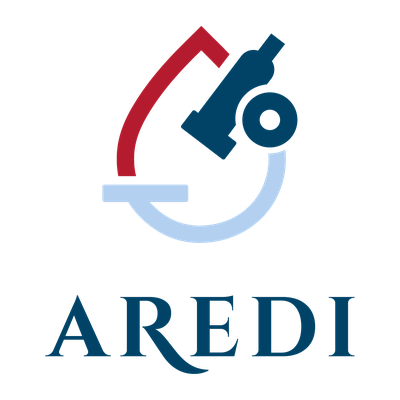

Cada donació al repte és una gota. Toca una gota per llegir el missatge de qui l'ha deixada. Cada donación al reto es una gota. Toca una gota para leer el mensaje de quien la dejó. Every donation to the challenge is a drop. Tap a drop to read the message left by the donor.
…
Les gotes noves poden trigar uns minuts a aparèixer a l'ampolla. Las gotas nuevas pueden tardar unos minutos en aparecer en la botella. New drops can take a few minutes to show up in the bottle.
Encara no hi ha gotes. Sigues la primera! Todavía no hay gotas. ¡Sé la primera persona! No drops yet. Be the first!
El repte recorre 180 km del Llobregat, del Berguedà fins al mar. La recerca fa un camí semblant: comença amb una pregunta i no s'atura fins trobar la cura de la diabetis tipus 1. Cada donatiu hi impulsa el corrent. El reto recorre 180 km del Llobregat, del Berguedà hasta el mar. La investigación hace un camino parecido: empieza con una pregunta y no se detiene hasta encontrar la cura de la diabetes tipo 1. Cada donativo impulsa esa corriente. The challenge follows 180 km of the Llobregat, from the Berguedà to the sea. Research follows a similar course: it starts with a question and doesn't stop until it finds a cure for type 1 diabetes. Every donation pushes that current forward.

Cada poble i cada heroi és un tram del recorregut. Sumats, arriben al mar — i la recerca, un pas més a prop de la cura. Cada pueblo y cada héroe es un tramo del recorrido. Sumados, llegan al mar — y la investigación, un paso más cerca de la cura. Each town and each hero is a stretch of the route. Together they reach the sea — and research, one step closer to the cure.
Carregant reptes… Cargando retos… Loading challenges…